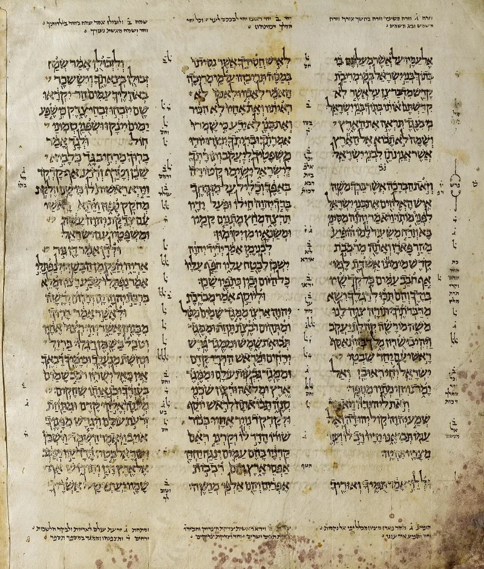
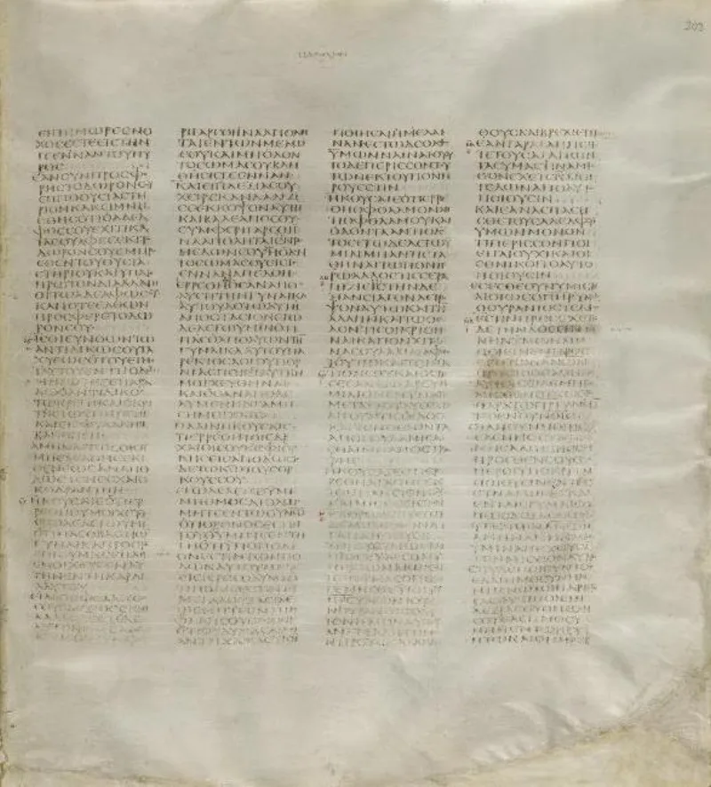
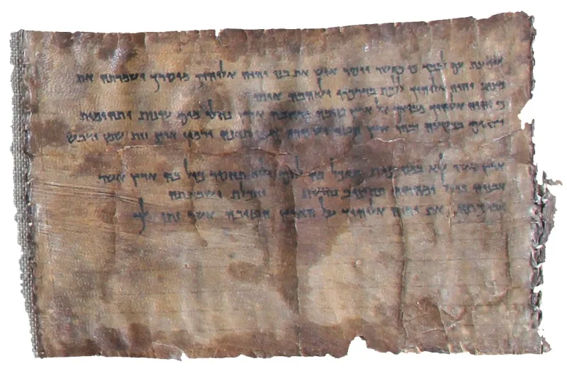

No good counter-argument has been published by Muslim scholars.
Quran 7:157 says Muhammad is "written with them in the Torah and the Gospel." Quran 61:6 says Jesus foretold a messenger named Ahmad. Three passages are usually offered as proof.
It promises a prophet "from among your brothers" who is like Moses. Deuteronomy 18:2 uses brothers of fellow Israelites.
Acts 3:22 identifies him as Jesus. Deuteronomy 34:10-12 defines like Moses by signs, wonders, and knowing God face to face.
Quran 29:50-51 denies Muhammad those very signs.
In John 14-16 the Paraclete is "the Spirit of truth," whom the world cannot see, who will be in the disciples, and whom they would receive themselves. None of that fits a man born five centuries later.
The periklytos guess has no manuscript support at all. In Song of Songs 5:16, machamaddim is a plural common noun meaning altogether desirable.
It is used elsewhere in Song 2:3 and Hosea 9:16.
Ahmed Deedat, Zakir Naik and Discover The Truth answer this way. Brothers of the Israelites means their kin, the Ishmaelites.
Muhammad matches Moses more closely than Jesus does — natural birth, marriage, law-giving, migration, military leadership, natural death. The Paraclete passages were altered, or parakletos is a corruption of periklytos, the praised one, which is Ahmad.
And machamaddim carries the very consonants of his name.
Strong for you, and the textual reply stands unanswered. Every Greek manuscript of John reads parakletos.
But the sharpest point is the shape of the argument itself. Quran 7:157 sends Muslims to the Torah and Gospel to find Muhammad.
That assumes those books can be read and trusted.
"If the Bible is corrupt, why does your book tell you to look for Muhammad in it?"



They say brothers means Ishmael's line, and the Paraclete verses were changed.
Dawah apologists answer this way. They include Ahmed Deedat, Zakir Naik and Discover The Truth. Brothers of the Israelites means their kin, the Ishmaelites. Muhammad, they say, matches Moses more closely than Jesus does. He was born in the normal way. He married. He gave a law. He migrated. He led armies. He died a natural death. Jesus, as divine Son, differs at each of those points.
The Paraclete passages were altered. Or parakletos is a garbled form of periklytos, the praised one, which is Ahmad. And machamaddim carries the very letters of Muhammad's name, in a love-song about the Messiah. They add that Quran 7:157 is confirmed by the fact that traces survive at all, after ages of copying by people hostile to Islam.
Strong for you: and the argument needs the Bible it calls corrupt.
The Christian reply stands unanswered at the level of the text. Deuteronomy 18:2 and 17:15 fix brothers as Israelites. Deuteronomy 34:10-12 defines like Moses by signs, by wonders, and by knowing God face to face. Those are the exact marks Islam denies Muhammad (Quran 29:50-51).
Every Greek copy of John reads parakletos. The periklytos fix is pure guesswork. Machamaddim is ordinary Hebrew, used also in Song 2:3 and Hosea 9:16.
Most of all, the argument breaks itself. Quran 7:157 assumes a Torah and Gospel that can be read and trusted in the 7th century. That runs straight into this site's central dilemma over tahrif, the claim that the Bible was changed. No Muslim reply gets out of that circle.